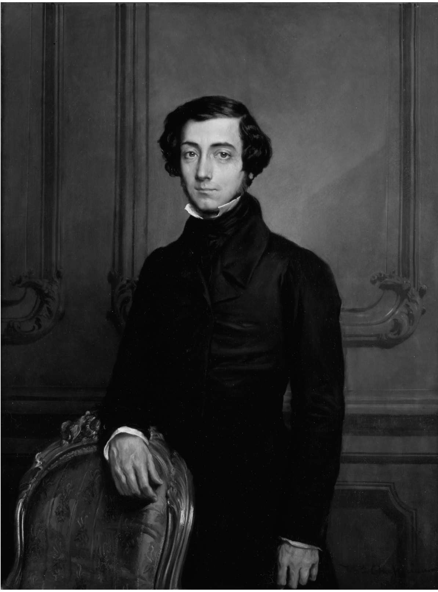

亚历克西·德·托克维尔是个怎样的人？一位作家，当然，并且格调高雅，但他是以传播知识和真理为己任的非虚构类作家，文笔扣人心弦，才华跃然纸上。一位社会科学家，却没有如今这些繁琐方法、袖手中立和假装客观的桎梏。托克维尔是政治学的拥护者和改革者，他的政治学在某些方面可称之为科学，但他决不允许科学成为实现政治目标的阻碍。历史学家？不错，因为他写到了美国的民主，无论今昔，那里都是民主实践的主要所在；又写及法国的旧制度，他认为那里是民主肇始之处——只不过其形式颇出人意料，是由君主制下的理性主义行政管理着。他的文风并非抽离于具体时空的理论家一路。但他是个寻根问底之人，而非平铺直叙的讲述者，且他选择书写最重要的事件，索性称其为“初始动因”（first causes）。哲学家？这很难说，因为很多将哲学等同于体系的人不以为然，而我却认为实至名归，他实质上更像个哲学家。我们不妨折中地称他为“思想家”，对于一个对哲学存疑的人，这是个相对谨慎的称呼。
伟人？确凿无疑。托克维尔之伟大，不仅因其真知灼见，还因为他在“伟大”一词在民主时代遭到攻击或被蛮横无视之时挺身而出，向人们阐释了何为伟大。托克维尔之伟大，还因为他把民主和自由与伟大联系了起来。

图1 1850年的亚历克西·德·托克维尔。托克维尔出生时，他父亲看了一眼他那表情极其丰富的脸庞，就断定他日后必成伟人
“新式自由主义者”：这是托克维尔的自我定义。如今托克维尔并非以自由主义者著称，他的朋友、撰写过《论自由》一书来解释和鼓吹自由主义原则的约翰·斯图尔特·密尔才是个自由主义者。托克维尔似乎更像个社会学家，注重描述和分析，只是更兼文笔上佳。他的著作处处闪耀着卓见之光，但他的思想从对事实的观察得来，而不是经过系统整理、依序排列的一堆论据。不过我还是应该尽量还原他自我认知的标签，说明正因为他并非理论至上（自由主义者一般都喜谈理论），他才无愧于跻身最伟大的自由主义者之列。
如果说托克维尔是个新式自由主义者，也就意味着自由主义本身并非什么新鲜事。“自由主义者”（liberal）一词的确是直到托克维尔生活的时代才开始使用的，但在此之前，17世纪的现代政治理论家们——特别是把人天生自由作为第一前提的托马斯·霍布斯、巴鲁赫·斯宾诺莎和约翰·洛克等人——就已经在自己的学说中为这种自由主义提供了依据。他们的意思是，在人可能具备任何社会或政治品格之先，必须假设人生活在一种抽象的境况（即“自然状态”）中，在那种状态下，人可以自由选择是否赞同其可能加入的社会及其政治。托克维尔并不认为人的初始状态是洛克所说的“绝对自由”，也不认为自由的起源先于政治。他似乎宁愿赞同亚里士多德，这位前现代哲学家说“人天生是政治动物”，意即人的自由必然要到政治，而不是某种先于政治的初始自然状态中去寻找，这恰是上述几位现代理论家反对的。
托克维尔并不是说他赞同亚里士多德的观点。他不赞同亚里士多德所说的哲学是最高级的生活方式。他不与哲学家们争论，也很少提到他们；偶一为之，往往是在贬低他们。在《论美国的民主》中，他所赞扬的那些践行自由的美国人，据称比文明世界其他任何地方的人更“不注重哲学”。在《旧制度与大革命》中，他谴责18世纪启蒙运动时期的哲学家（philosophes），或称“文人”（men of letters），都是些毫无政治实践经验、只知对政治胡乱发表意见的空谈家。他在上述两部著作中都未曾提及自由主义的自然状态，在关于美国的书中，也没有就《独立宣言》中有关美国自由主义原则的语句进行任何讨论。托克维尔显然意识到了旧式自由主义的存在，而他的应对之道便是不去理会。
相反，他走向了自己的新式自由主义，主张自由是宗教之友，充满骄傲，同时也为私利所驱使。这种新式自由主义需要“为焕然一新的世界”准备一种“全新的政治学”，它并非托克维尔提出的一套原则体系，与17世纪的自由主义体系分庭抗礼；也不是更加现代的18世纪政治学家孟德斯鸠的政治学，与托克维尔同时代的邦雅曼·贡斯当和弗朗索瓦·基佐等自由主义者，以及此前《联邦论》（The Federalist）的诸位美国作者，都将孟德斯鸠奉为圭臬。孟德斯鸠的新政治学是为旧世界撰写的，彼时让世界“焕然一新”的现代民主尚未来临，美国也还没有成立。
托克维尔的政治学体现在他所描绘的自由中，那是在真实的美国社会践行的自由，而不是先于实践的原则。正因为此，他的著作才以证据、观察和实例让读者着迷并深为信服。他的分析往往看似随意发挥，甚至凌杂无序，却并非漫无章法；每个分论点都在为整体讨论提供支持，全貌是逐步呈现的。在本书中，我将探讨他的新式自由主义的五个方面。这五个方面均在某种程度上关乎民主，因为民主就是新世界，在那里，为了生存和繁荣，必须创造自由。
首先是托克维尔本人生活中的民主政治，因为他既是一位作家又是未来的政治家，既是贵族又是自由主义者。其次是他关于美国民主自治的思想，在他的时代，乃至我们的时代，美国一直是民主的大本营。随后是他对于民主的恐惧，这在《论美国的民主》下卷表现得尤其明显。他在那本书中揭露了民主理论引发的风险，它们可能会激怒民主大众，同时使之活力尽失。接下来在《旧制度与大革命》一书中，我们可以看到托克维尔描述了法国君主制借以消解封建贵族统治的理性主义行政管理。他揭示了看似无关的两件事 ——（人民做主的）民主与（官僚当家的）理性主义行政 ——之间的联系。最后是托克维尔渴望从民主中看到伟大，如果可以的话。既然蠢笨又倔强、消极又贪婪的庸庸大众也获得了民主的权利，托克维尔就必须教导我们如何让民主摆脱其种种缺陷。他以为，自由的“真正朋友”也应与“人的伟大”相伴相随。
托克维尔为何在今天仍有重要意义？首先，对他的重要性已有广泛共识。如今，我们很难想出任何其他分析美国政治和社会之人享有比他更显要、更广泛的声誉。在他有生之年，以及随后的整个19世纪和20世纪的大半时间里，他的自由主义看似平凡无益，左右两派的激进批评家都风光无限，令他黯然失色。但当激进右派在第二次世界大战中战败，而激进左派又因暴政的卑劣行径让人倒足了胃口之后，温和的自由主义者便脱颖而出，其中最引人注目的就是托克维尔。在法国，哲学家雷蒙·阿隆和历史学家弗朗索瓦·福雷再度将托克维尔带入了人们的视野；因为他的书，托克维尔在美国一直饱受赞誉，随着美国人重新思考其知识界是否过于倚重马克思和尼采，并重新讨论“美国例外论”（即美国可以成为全体人类的楷模）的本质，他再次受到美国人的青睐。自艾森豪威尔以降，每一位美国总统都曾引用过他的原话（其中不乏穿凿附会者！），学术圈的社会学家和历史学家广泛引述他的辞章，大众历史学家和记者也在很多书籍中提到托克维尔 ——这样既能添加文采，也显得更有权威。左右两派均对《论美国的民主》充满兴趣，各派自有其偏爱的段落，都渴望借托克维尔的威名为自己营造声势。
然而人们尚未因为托克维尔丰富而深邃的思想而给予他应有的评价。原因之一正是他才华过人，仿佛除辩才之外并无他长，而他对未来的敏锐直觉则让他显得有些怪异离奇。好像某人文笔出色必流于浅薄，预测奇准必是妖人巫士。他文笔的优美多少干扰了人们对其所言进行仔细分析，例如，他曾把美国的总统选举比作风暴过境。智慧遭到低估的另一原因是托克维尔竭力反对民主社会的抽象概括能力。美国的民主主义者乐于概括、普及或维持均衡，以便包含、容忍和赏识。与民主主义者携手并进的美国知识分子也喜欢建章立论，以便普适、精准和摆脱过去。就连我们的历史学家也想要重建历史。托克维尔的自由主义迫使我们思考自身为践行自治实际做了些什么，而不是在我们是否拥有什么权利的抽象层面争论不休。托克维尔早已声驰千里，而我们从他身上学到的还远远不够。